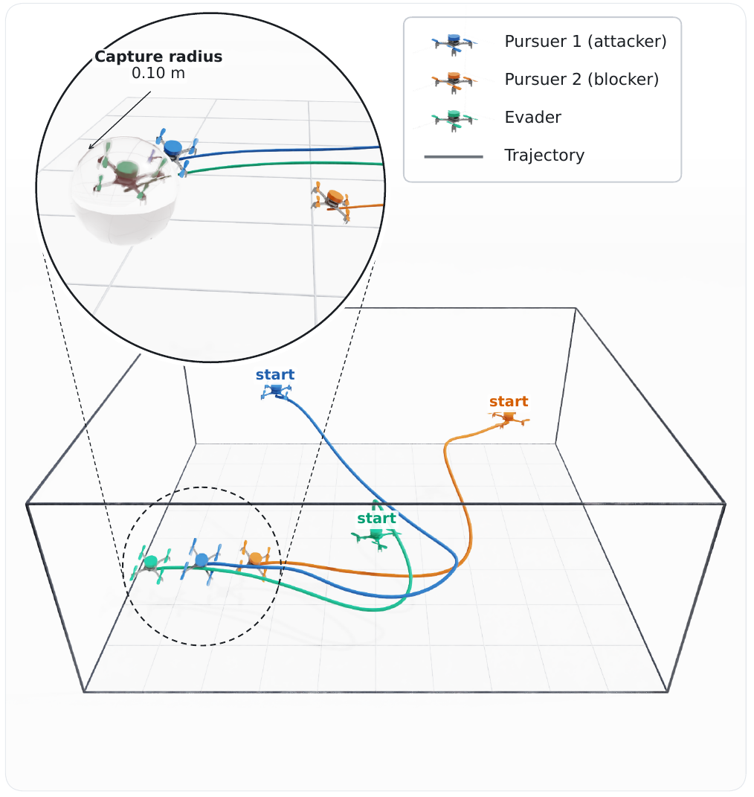
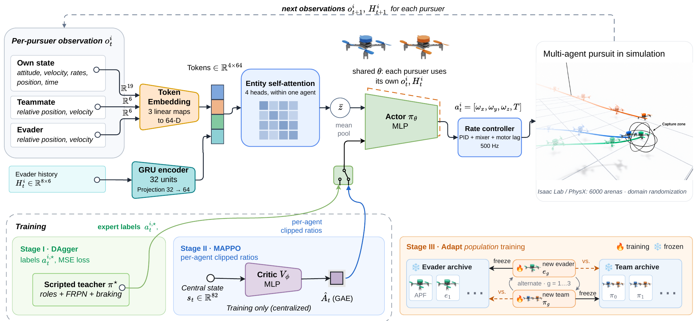
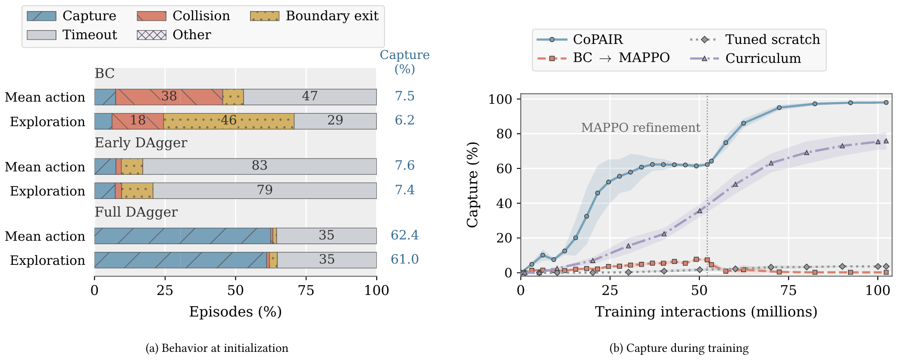
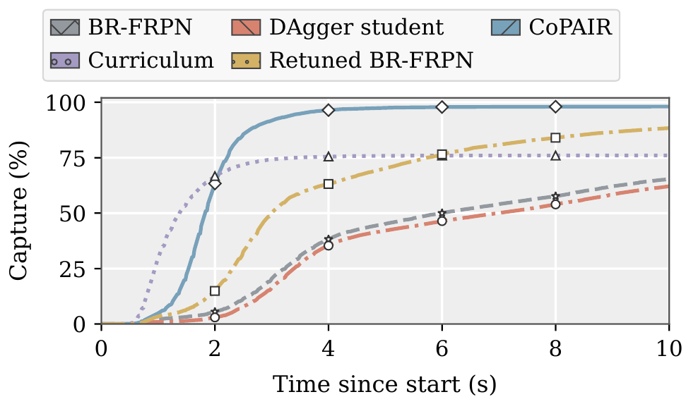
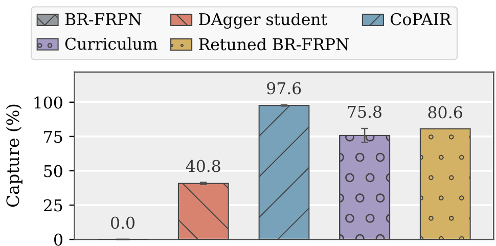
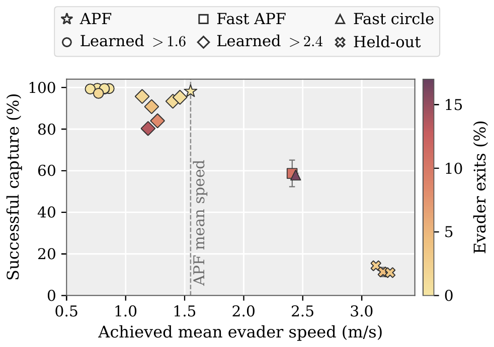

Under double-blind review
Paper and code links will be added after the review period.

Abstract
Learning cooperative aerial pursuit requires coordinated closed-loop behavior and adaptation to changes in opponent behavior. We study this problem in a continuous-control setting with two quadrotor pursuers and one evader. We introduce CoPAIR (Cooperative Pursuit through Aggregated Imitation and Refinement), which separates learning coordinated pursuit behavior from subsequent policy improvement and adaptation.
A proportional-navigation controller assigns complementary attacker and blocker roles to the two pursuers and supervises a shared decentralized policy using Dataset Aggregation (DAgger). Multi-Agent Proximal Policy Optimization (MAPPO) then improves this policy directly from task reward. Subsequent reinforcement learning depends strongly on whether the teacher labels states visited by its own policy or by the student policy. Behavior cloning from teacher-generated trajectories produces poor closed-loop performance, whereas DAgger provides a strong initialization that MAPPO improves to approximately 98% clean capture against the scripted evader, with higher capture rates and shorter capture times than a retuned version of the teacher.
High performance against the scripted evader does not transfer directly to learned evaders unseen during pursuer training and policy selection. Continued training against a population of learned opponents substantially recovers this lost performance while largely retaining performance against the original opponent. Supervision on learner-visited states can provide an effective foundation for subsequent multi-agent reinforcement learning.
Method
Each pursuer runs the same parameter-shared actor on its own local observation and a short evader history, and outputs body rates and collective thrust at 50 Hz. A centralized critic is used only during training. Competence is acquired first, then improved, then made robust to new opponents.

FRPN proportional navigation augmented with complementary roles: the pursuer closer to the evader attacks, the other blocks an interception point ahead of it. A boundary-aware stopping envelope limits outward velocity. No communication or central state.
The student flies both pursuers from the first rollout; the teacher only labels the states the student visits. 17 fitting rounds over a six-round replay window, MSE on actions, 52.2M environment steps.
The DAgger actor is optimized directly on task reward with a centralized critic over an 82-D global state. The critic is warmed up first; no imitation loss is retained, so the policy can depart from the teacher.
PSRO-style alternation between evader and team archives. Opponents are sampled with challenge weighting qj ∝ (1−wj)2 plus a uniform floor, and the archive always keeps the scripted APF evader.
Problem Setup
All three agents are identical 34 g nano-quadrotors driven through the same body-rate and collective-thrust interface. The pursuers share a team reward and are modeled as a Dec-POMDP for a fixed evader policy.
| Setting | Value |
|---|---|
| Arena | 4 × 5 × 2 m |
| Capture radius | 0.10 m |
| Episode horizon | 10 s |
| Control interface | Body rates + collective thrust |
| Policy / physics rate | 50 Hz / 500 Hz |
| Parallel arenas | 6000 |
| Stage I budget | 52.2M environment steps |
| Stage II budget | 50.1M environment steps |
| Stage III block | 50.1M environment steps |
31-D per pursuer: rotation matrix, body-frame velocity, angular velocity, world position, body-frame relative state of the evader and of the teammate, and remaining time, plus an 8×6 history of evader-relative positions and velocities.
Some pursuer within 0.10 m of the evader with no concurrent pursuer collision (0.1385 m) or boundary failure. Mass, inertia, motor lag, drag and controller gains are randomized per vehicle at reset.
Results
Final evaluation against the scripted APF evader on 6000 randomized starts × five executions. Learned rows report mean ± SD over three training runs; learned paths use 102.3M interactions. Collision and boundary events concern pursuers.
| Training path / controller | Capture after imitation (%) | Final evaluation (%) | |||
|---|---|---|---|---|---|
| Capture ↑ | Collision ↓ | Boundary exit ↓ | Timeout ↓ | ||
| Tuned scratch MAPPO | – | 3.71 ±0.25 | 0.54 ±0.18 | 0.97 ±0.12 | 94.79 ±0.44 |
| Curriculum MAPPO | – | 76.00 ±4.73 | 16.60 ±2.85 | 6.37 ±2.22 | 0.00 ±0.00 |
| BC → MAPPO | 6.51 ±1.37 | 0.11 ±0.10 | 4.93 ±1.37 | 0.90 ±0.20 | 94.05 ±1.48 |
| CoPAIR | 62.16 ±0.77 | 98.06 ±0.14 | 0.89 ±0.13 | 0.92 ±0.03 | 0.02 ±0.02 |
| CoPAIR (retuned BR-FRPN)† | 78.11 ±1.38 | 96.35 ±0.20 | 0.68 ±0.11 | 2.84 ±0.14 | 0.00 ±0.01 |
| Role-free CoPAIR | 69.80 ±1.33 | 93.40 ±1.27 | 5.66 ±1.17 | 0.31 ±0.04 | 0.00 ±0.00 |
| Restricted-teammate CoPAIR | 69.92 ±0.57 | 93.62 ±0.69 | 5.48 ±0.64 | 0.22 ±0.04 | 0.05 ±0.03 |
| Original BR-FRPN | – | 65.35 | 0.74 | 0.12 | 33.75 |
| Retuned BR-FRPN | – | 88.33 | 0.81 | 3.76 | 7.04 |
Bold = best, underline = second best capture. †Demonstrations from the retuned BR-FRPN; exploratory. Omitted mass is evader exits and simultaneous events. Scripted controllers are point estimates on the same evaluation set.



Opponent Shift & Adaptation
The Stage II team (P0) falls from 98.2% capture against APF to 12.2% against held-out learned evaders (E1). Continued training from the same P0 parents, under the same 150.3M pursuer-interaction budget, compares which opponent distribution recovers it.
| Continuation | Capture (%) ↑ | |||
|---|---|---|---|---|
| APF | E1 held-out | E2* | E3* | |
| P0, no continuation | 98.2 ±0.5 | 12.2 ±0.9 | 14.9 ±2.4 | 14.7 ±1.9 |
| A: APF only | 98.6 ±0.4 | 22.3 ±6.8 | 29.2 ±3.0 | 23.6 ±0.9 |
| B: one learned evader | 94.9 ±1.3 | 60.7 ±8.3 | 78.4 ±2.8 | 69.2 ±3.3 |
| C: fixed archive, uniform | 98.1 ±0.3 | 68.2 ±12.0 | 81.5 ±4.0 | 74.5 ±2.9 |
| D: fixed archive, challenge-weighted | 98.1 ±0.2 | 69.7 ±5.3 | 81.9 ±2.8 | 75.3 ±2.8 |
| P3: alternating* | 97.5 ±1.9 | 67.2 ±8.6 | 81.0 ±1.9 | 76.0 ±1.4 |

6000 starts × two executions; mean ± SD over three runs. E1: three checkpoints from one evader training run excluded from pursuer training, opponent sampling and selection. *E2/E3 are training opponents of P3, unseen by A–D.
Citation
Author and publication details will be added after the review period.
@inproceedings{anonymous2027copair,
title = {Teacher-Guided Multi-Agent Reinforcement Learning for
Cooperative Quadrotor Pursuit},
author = {Anonymous},
booktitle = {Under review},
year = {2027}
}